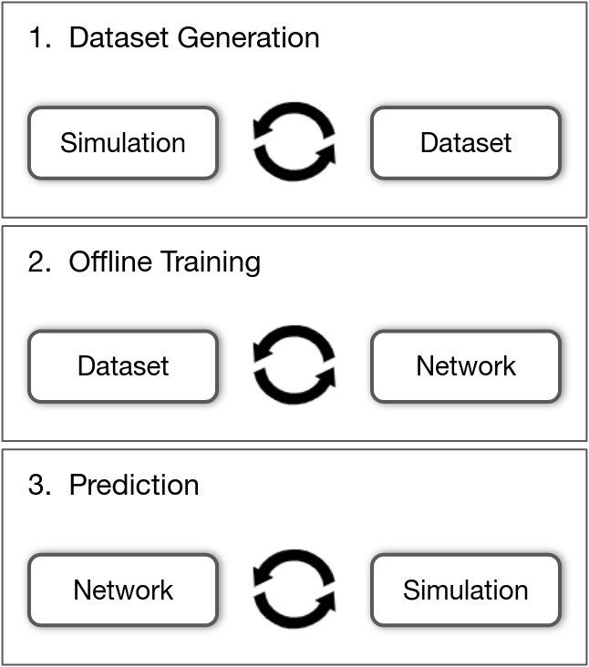
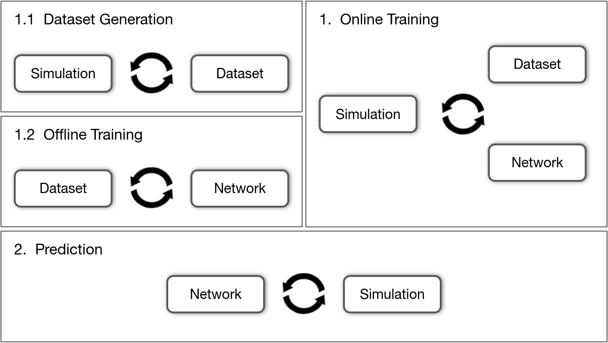
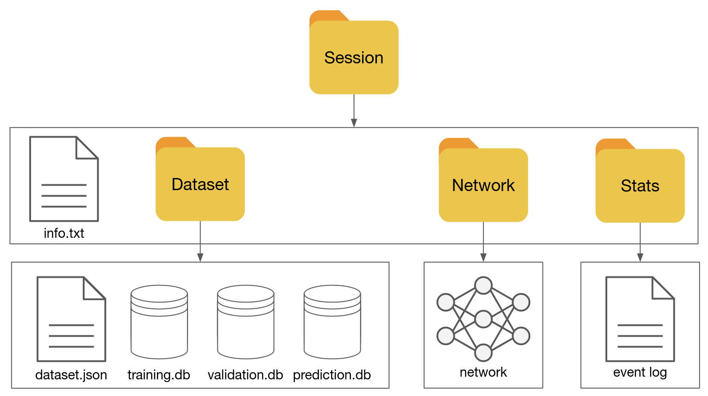

About
Features
The purpose of the DeepPhysX framework is to provide an interface between Deep Learning algorithms and numerical simulations.
This full Python3 project brings several pipelines, allowing the user to:
Generate a dataset with synthetic data from numerical simulations;
Train an artificial neural network with a synthetic dataset;
Use the predictions of a trained network inside a numerical simulation.
Note
The dataset generation and the training pipelines can be done simultaneously.
|  |  |
About dataset components, the project has the following features:
Automatic training dataset storage and loading;
Dataset shuffle and normalization;
Multiple dataset modes: Training, Validation, Prediction;
Customizable dataset fields.
About simulation components, the project has the following features:
Data generation achieved by several simulations running in multiprocessing with a client-server architecture;
Operation with internal data, from the dataset or from the neural network;
Increased interactions with other components (dataset, neural network, visualizer);
Check the validity of the training data.
About neural network components, the project has the following features:
Automatic storage and loading of networks during training;
Customizable data transformations at each step (forward pass, optimization, prediction apply);
Customizable optimization process with training data;
Compatibility with any torch.nn.Module architecture;
Already implemented architectures: MLP, UNet.
Additional tools are also provided:
A visualization Factory to init, update and render the simulated objects (written with SimRender);
An customizable analysis of the evolution of the training session (written with Tensorboard).
Working sessions
A DeepPhysX pipeline is associated with a working session. The repository is automatically managed and typically contains the following tree structure:
Dataset:Contains the dataset partitions and a json description file;
Network:Contains the saved neural networks;
Stats:Contains a Tensorboard file which gathers training analysis;
info.txt:A text description file which gathers the configurations of all the involved components.
|  |